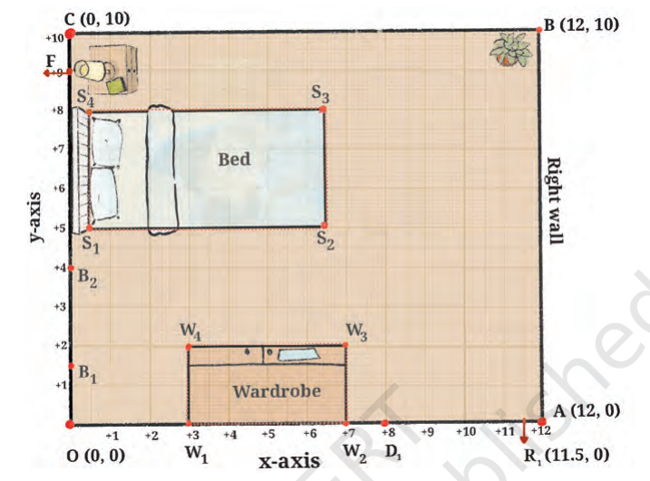

Mathematics solution NCERT
Class 9 - Chapter 1: Orienting Yourself: The Use of Coordinates
Q1: Fig.shows Reiaan’s room with points OABC marking its corners. The
x- and y-axes are marked in the figure. Point O is the origin
Referring to Fig., answer the following questions:
(i) If D1
R1
represents the door to Reiaan’s room, how far is the door
from the left wall (the y-axis) of the room? How far is the door
from the x-axis?
(ii) What are the coordinates of D1
?
(iii) If R1
is the point (11.5, 0), how wide is the door? Do you think this is
a comfortable width for the room door? If a person in a wheelchair
wants to enter the room, will he/she be able to do so easily?
(iv) If B1
(0, 1.5) and B2
(0, 4) represent the ends of the bathroom door,
is the bathroom door narrower or wider than the room door?

Image source- NCERT
(i) If D1R1 represents the door to Reiaan’s room, how far is the door from the left wall (the y-axis)? How far is the door from the x-axis?
Observation from the figure:
The room door is represented by the line segment D1R1.
Point R1 is given as (11.5, 0).
Point D1 lies on the x-axis at x = 8.
Therefore,
D1 = (8, 0)
R1 = (11.5, 0)
Since the door lies on the x-axis, its y-coordinate is 0.
Distance of the door from the y-axis = x-coordinate of D1
= 8 units
Distance of the door from the x-axis = 0 units
Answer:
- Distance from the y-axis = 8 units
- Distance from the x-axis = 0 units
(ii) What are the coordinates of D1?
From the figure, D1 lies on the x-axis exactly above x = 8.
Since every point on the x-axis has y-coordinate 0,
D1 = (8, 0)
Answer:
D1 = (8, 0)
(iii) If R1 is the point (11.5, 0), how wide is the door? Is this a comfortable width for the room door? If a person in a wheelchair wants to enter the room, will he/she be able to do so easily?
Coordinates of the door endpoints:
D1 = (8, 0)
R1 = (11.5, 0)
Width of the door = Difference of x-coordinates
= 11.5 − 8
= 3.5 units
Answer:
Width of the room door = 3.5 units
A door width of 3.5 units is quite wide and comfortable.
Since wheelchair users generally require a wider entrance, a door of width 3.5 units would allow easy movement.
Therefore, a person using a wheelchair should be able to enter comfortably.
(iv) If B1(0, 1.5) and B2(0, 4) represent the ends of the bathroom door, is the bathroom door narrower or wider than the room door?
Bathroom door endpoints:
B1(0, 1.5)
B2(0, 4)
Bathroom door width = Difference of y-coordinates
= 4 − 1.5
= 2.5 units
Room door width = 3.5 units
Bathroom door width = 2.5 units
| Door | Width (units) |
|---|---|
| Room Door D1R1 | 3.5 |
| Bathroom Door B1B2 | 2.5 |
Since
3.5 > 2.5
the room door is wider.
Answer:
The bathroom door is narrower than the room door by:
3.5 − 2.5 = 1 unit
So, the bathroom door is 1 unit narrower than the room door.